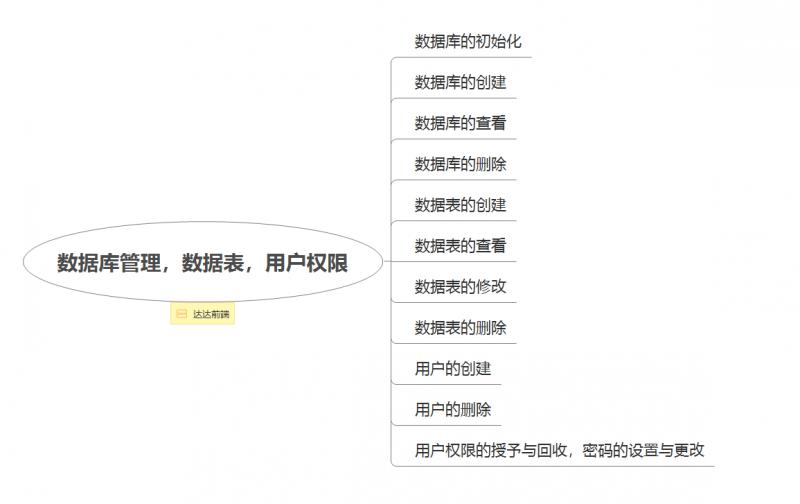

作者 | Jeskson
来源 | 达达前端小酒馆
MySQL管理，数据库管理和数据表管理，用户管理。
初始化数据库，创建数据库，查看数据库，删除数据库。
创建数据表，查看数据表，修改数据表，删除数据表。
用户管理，创建与删除用户，授予与回收用户权限，设置与更改用户密码。
初始化数据库
mysqld --initialize启动数据库：
使用windows服务器管理界面启动；或使用MySQL命令启动。
mysql -u root -p创建数据库
CREATE DATABASE语句用于创建一个新的数据库
CREATE DATABASE [db_name];// 创建一个名为dada的数据库
create database data;数据库创建好后，会在data目录下自动生成一个名为data的目录，该数据库的数据会存储于此目录下，MySQL是一个数据库管理系统，支持运行多个数据库。
查看数据库
SHOW DATABASESshow databases;删除数据库
DROP DATABASE db_name;drop database dada; // 删除dada数据库删除数据库是一个不可逆的操作。
MySQL的每个数据库就相当于一个容器，里面放着很多许多表，表中的每行包含一条具体的数据关系信息，为数据记录。在data目录下，每个数据库对应一个目录。
每个数据表对应3个文件，分别为".frm","myd",".myi"类型的文件。
创建数据表：
USE 数据库名；
CREATE TABLE 表名（字段名 类型（长度），字段名 类型（长度））；查看数据表
SHOW语句和DESCRIBE语句
// 查看数据库中有哪些表
SHOW TABLES;
// 此命令可以列出所有表名
show tables;
// DESCRIBE
DESCRIBE 库名.表名;
使用DESCRIBE语句可以查看某一个表的具体结构，并查看组成表的各字段的信息use mysql;
describe user;使用describe语句可以查看表的各个字段名称，类型，长度，是否非空，是否有主键，默认值以及备注等信息。
修改数据表
修改数据表使用ALTER语句来实现，alter，修改表，包括修改表的名，字段的名，字段类型等表结构。
修改表名
ALTER TABLE 旧表名 RENAME 新表名；ALTER TABLE student RENAME student1;修改字段名：
ALTER TABLE 表名 CHANGE 旧属性名 新属性名 新数据类型;ALTER TABLE student1 CHANGE name s_name varchar(50);修改字段类型
ALTER TABLE 表名 MODIFY 属性名 数据类型;ALTER TABLE student1 MODIFY name varchar(2);增加字段：
ALTER TABLE 表名 ADD 属性名 数据类型;ALTER TABLE student1 ADD sex char(1)删除字段：
ALTER TABLE 表名 DROP 属性名;ALTER TABLE student1 DROP sex;删除数据表
USE 数据库名;
DROP 表名;使用DROP语句可以删除数据库中的表
DROP TABLE 数据库名.表名;USE test;
DROP TABLE student1;DROP TABLE test.sudent1;mysql用户管理创建与删除用户
创建用户
CREATE USER 'username'@'host' IDENTIFIED BY 'password';username表名要创建的用户名
host表示在哪个主机上可以登录
CREATE USER 'test1'@'localhost' IDENTIFIED BY '123';CREATE USER 'test2'@'192.123.2.2' IDENTIFIED BY '12';CREATE USER 'test3'@'%' IDENTIFIED BY '';
// identified用户删除
DROP USER 'username'@'host';删除用户的语法与创建用户的语法相同
DROP USER 'test1'@'localhost';删除本地主机数据库用户
可以对用户进行授权：
GRANT privileges ON dbname.tablename To 'username'@'host';privileges表示要授予用户的操作权限
dbname表示数据库名
tablename表示数据表名
username和host分别表示用户名和登录主机
GRANT SELECT, INSERT ON mysql.test TO 'test1'@'%';表示授权用户test1在所有登录主机均对mysql库的test表拥有select和insert权限。
GRANT ALL ON *.* TO 'test2'@'localhost';如果要授予用户对所有数据库和表的相应操作权限，可用“*”表示，如“*.*”。
回收用户权限
REVOKE privileges ON databasenamme,tablename FROM 'username'@'host';REVOKE SELECT ON *.* FROM 'test2'@'localhost';回收用户test2在本地主机数据库对所有库的所有表的SELECT权限
设置与更改用户密码
SET PASSWORD FOR 'username'@'host' = PASSWORD('newpassword');;username为要设置或更改密码的用户名
host为用户的登录主机
newpassword为设置或更改的密码
SET PASSWORD FOR 'test1'@'localhost' = PASSWORD('123');
作者Info：
【作者】：Jeskson
【原创公众号】：达达前端小酒馆。
【福利】：公众号回复 “资料” 送自学资料大礼包（进群分享，想要啥就说哈，看我有没有）！
【转载说明】：转载请说明出处，谢谢合作！~
大前端开发，定位前端开发技术栈博客，PHP后台知识点，web全栈技术领域，数据结构与算法、网络原理等通俗易懂的呈现给小伙伴。谢谢支持，承蒙厚爱！！！
若本号内容有做得不到位的地方（比如：涉及版权或其他问题），请及时联系我们进行整改即可，会在第一时间进行处理。
这是一个有质量，有态度的博客